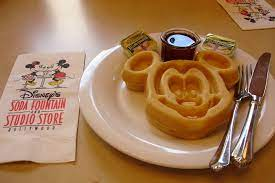

A Magical Breakfast
Mickey Mouse Waffles
This recipe is adapted from the blog "No.2 Pencil" written by Melissa Mondragon and can be found on https://www.number-2-pencil.com/mickey-mouse-waffle-maker-for-homemade-mickey-waffles/

Photo by: Pheede, https://www.flickr.com/photos/pheede/673533571
Ingredients
3/4 cup all-purpose flour
2 tablespoons sugar
1 teaspoon baking powder
1/2 teaspoon baking soda
1/2 teaspoon kosher salt
2 eggs
2 cups buttermilk
1/2 cup vegetable oil
1 teaspoon pure vanilla extract
Directions
Preheat waffle iron.
In a medium sized mixing bowl, combine flour,
sugar, baking powder, baking soda and salt.
Whisk to combine.
In a separate bowl, combine eggs,
buttermilk, vegetable oil and vanilla
extract.
Add wet ingredients to dry ingredients and stir
just until combined.
Measure 1/2 cup of batter onto Mickey Mouse
waffle maker. Cook for about 3 minutes, or
until golden brown.
Serve
Conversion
Rate This Recipe
What skill level is this recipe?
This page was created as an academic
actvity only